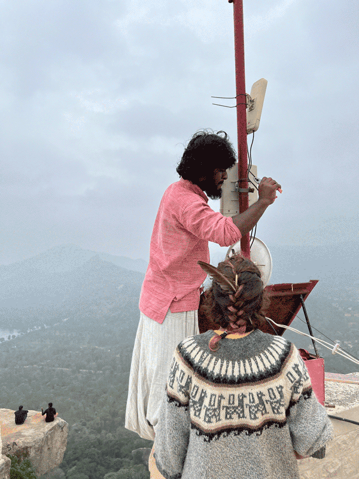

In conversation with Sanketh Kumar
Sanketh Kumar is a collaborator of Janastu and the founder of COWDe.Net (Community Owned Decentralized Networks). COWDe, phonetically similar to Kaudi, is a traditional quilt made by stitching together smaller pieces of used fabrics. COWDeNet envisions a coming together of various community networks to form a larger fabric of internet, or dWeb.
The conversation begins after discussing a talk Sanketh (SK) gave at FOSS United, titled Building Community Owned Decentralized Networks in Rural India.
SK: COWDe.Net sees networking as a local first approach. The “COW” in COWDe.Net stands for Community-Owned Wi-Fi. You first get connected to your neighbor, then connect your village to itself. You ensure there are communications happening and exchanges of information and knowledge. Then you get connected to the next neighborhood village. Then again, another village. That's how the internet can form. You know your grandma's quilt, right? She'll take old clothes, stitch them together, and then form a big blanket. That's how I envision the space of decentralized community networks. This is COWDe.Net. In Kannada, Kaudi means quilt. So it's a coming together of small communities to form a larger quilt of the fabric of the internet.
With that local first approach, you give importance to what is needed for you. It's local first, global next. But what is happening now is a complete disregard for the local — local ecosystems, local cultures, local languages.
MAHM: You’ve experienced working in Bangalore, where you’re from, and villages outside the city. Can you talk a little bit about COWDe.Net in these two different contexts?
SK: I was questioning the concept of growth, and I slowly started to feel like nature was the biggest loser. I started to think, “Okay, if I want to build stuff, who am I building it for? Why am I building it?” There's an eco-friendly way of building the internet. One Google search will consume a lot of electricity, and you don't need so many servers to be active just so you can do one Google search. During lockdown here, teachers would record and publish classes on YouTube. Neighboring classmates would both be streaming the same video from a YouTube service. Why do we need to do that? We can just make a copy of it, cache it, put it away here, and stream it any number of times on our local network. If you have a local server, anybody can access it any number of times.
I started to see how it can be done in cities too. Like, say, Bangalore’s public transport systems. There's so much IOT stuff and putting things on the internet. You don't need to put it on the World Wide Web. Let it be a Bangalore-hosted server for Bangalore citizens, and you localize your data. You keep it within yourself. Why should only some companies get hold of all this public data? Why shouldn't we have our own maps? With the state, you can question it, but with a private company, you cannot question it. It has to be public; it has to be open for all, open source.
So then I started to see the beauty of local networks, even within a city, even though it may not make sense, even though the internet is abundant here in Bangalore. But affordability became a big issue in the urban slums. Not everybody could afford access to the internet.
MAHM: You briefly talked about the politics of community-owned mesh networks or the role of the state versus a community. I'm wondering how you see the politics of these networks with regard to data and hardware sovereignty in these villages. SK: Ownership can be a tricky issue when it comes to corporations versus the state. I would rather have state ownership than corporate ownership because at least the state is elected here. You have the right to question it. Whereas that would not be the case with corporate ownership. So in that sense, I'm okay with the state owning it. But it's not the most ideal because that space for questioning is being reduced in India, especially with the current form of government. The state mandate is to connect the people, so they will do it. Even if it is a less profitable service, they'll still put it in all controversial border areas. It's only BSNL (Bharat Sanchar Nigam Limited) that has the right to put up these networks and who is willing to bear the losses because it's under the state. Do you think a corporate company will see any benefit in connecting those remote trains in North India? No. So you kind of need these state-owned institutions to do it.
The ideal situation is community ownership. If the community has more autonomy to build its own infrastructure, the government should allow space for that. I think those conversations have not happened here. And I think that conversation space is also dwindling nowadays. There's more push for the corporatization of things and privatization than community ownership.
Maybe it's not fully legal to do a community network, but to get it into the legal space, state officials need to see it implemented first. The one space we have was from Covid times when we went and told the officials that we wanted to use a government building there to connect a tower on the hilltop. They were okay with it because that was for the benefit of children here to get access to education. So they okayed it. Not on paper, but nobody hindered us. Maybe if we use that medium to protest against the government, they'll start questioning the legality of doing this. But if you're doing it for social welfare schemes that the government is not able to do, and you are filling in the gap, I think they're okay with it. Though there is no legal framework, they don't write it off. As long as you don't bother us, we'll not bother you, kind of a thing. MF: Do you view "local first" and "global next" as mutually exclusive, or can they be combined to acknowledge that people in the village want access to local networks and the global internet? SK: We are not saying, “let's cut off the people from the internet and let them be in silos.” That is not the idea either.
We did an exercise where we asked the kids to talk to elders and collect stories of what they are proud of in this place. The most common story was that people had to hike up to this hill for the temple. The hiking road was through these villages, and they would always offer food and shelter if needed. So there is a desire for connection outside your village, outside of your silo. When we talk about community networks, the community should decide what level of exposure they want to the outside world, but they need to have access first. It's up to the community to decide and regulate this. But they need to have the power to regulate.
MAHM: I want to talk about stewardship here, specifically in Tumkur. The goal is not for Janastu to administer the infrastructure indefinitely but for the communities to self-govern themselves. How do we re-cultivate that culture of stewardship? It seems there's an opportunity for COW Mesh to thrive here. SK: It feels that way because we have a history of local governance and local stewardship and all that stuff, but that's gone now. Even the remnants of that local stewardship and governance in the villages are just there because development has not reached them in that sense. And the aspiration from locals is to be in the city. They feel like they have to do local governance because they've been left behind and not because they want to do it, not because they see beauty in it. So it's easier for us to have conversations about community governance in the city space than it is in the village space sometimes because, in the villages, they are even more aspiring to be like city people than the city people. Maybe a few of the city people have seen the fallacy of this heavy modernization and heavy urbanization. But village people are just craving it and maybe they have to go through that whole cycle. It's very few people who would be like Maheshana, that natural farmer (Maheshana gave a talk at Anthillhacks on organic agriculture practices). He’s an odd one out and all the city people want to come and hang out with him and learn. But his own neighborhood doesn't really care about him.
MAHM: How does Janastu build trust to create local stewards?
SK: We need to engage with the community. I feel one of our major success stories was the community radio implementation in Kotagiri, similar to Namma Halli Radio in Tumakuru. So just before Covid, Girish, who worked with Janastu, had gone there and set up this radio. Our radio is nothing but one Raspberry Pi, running a web server and having a recorder.
So you record into it, and it gets published on a webpage. You can take the audio aside, cut it, and then put it back into this webpage. The webpage is nothing but a playlist of audio files. We put it as a bigger Wi-Fi router so that it'll reach everywhere. Once you go into that Wi-Fi router, there's only one URL you type, and that's the radio page.
During the Covid lockdown, nobody went to this village where Grisha set up this radio, but people were still making content, putting it up, and playing it every evening. There was a local music group there. They felt this was a good way to publish music to the community. So then they even built themselves a space so they could jam in there. They moved the entire radio set up to that space. They're all indigenous community members. So they have more of an ethos of being in a community together, and their community stewardship is easier to develop. I'm curious to go and expand and check out community networks and learn from experiences from other areas. This will take its own time.
Sanketh Kumar and Tania Silva servicing a tower in Tumkur